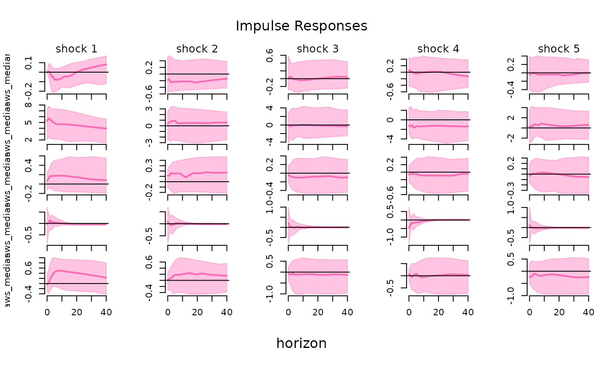

Bayesian Estimation of Structural Vector Autoregressions Identified by Sign, Zero, and Narrative Restrictions
Source:R/bsvarSIGNs-package.R
bsvarSIGNs-package.RdImplements state-of-the-art algorithms for the Bayesian analysis of Structural Vector Autoregressions identified by sign, zero, and narrative restrictions. The core model is based on a flexible Vector Autoregression with estimated hyper-parameters of the Minnesota prior as in Giannone, Lenza, Primiceri (2015) <doi:10.1162/REST_a_00483>. The sign restrictions are implemented employing the methods proposed by Rubio-Ramírez, Waggoner & Zha (2010) <doi:10.1111/j.1467-937X.2009.00578.x>, while identification through sign and zero restrictions follows the approach developed by Arias, Rubio-Ramírez, & Waggoner (2018) <doi:10.3982/ECTA14468>. Furthermore, our tool provides algorithms for identification via sign and narrative restrictions, in line with the methods introduced by Antolín-Díaz and Rubio-Ramírez (2018) <doi:10.1257/aer.20161852>. Users can also estimate a model with sign, zero, and narrative restrictions imposed at once. The package facilitates predictive and structural analyses using impulse responses, forecast error variance and historical decompositions, forecasting and conditional forecasting, as well as analyses of structural shocks and fitted values. All this is complemented by colourful plots, user-friendly summary functions, and comprehensive documentation. The `bsvarSIGNs` package is aligned regarding objects, workflows, and code structure with the R package 'bsvars' by Woźniak (2024) <doi:10.32614/CRAN.package.bsvars>, and they constitute an integrated toolset.
Details
Models. All the SVAR models in this package are specified by two
equations, including the reduced form equation:
$$y_t = Ax_t + \epsilon_t$$
where \(y_t\) is an N-vector of dependent variables,
\(x_t\) is a K-vector of explanatory variables,
\(\epsilon_t\) is an N-vector of reduced form error terms,
and \(A\) is an NxK matrix of autoregressive slope coefficients and
parameters on deterministic terms in \(x_t\).
The structural equation is given by:
$$B\epsilon_t = u_t$$
where \(u_t\) is an N-vector of structural shocks, and
\(B\) is an NxN matrix of contemporaneous relationships.
Finally, all of the models share the following assumptions regarding the
structural shocks u_t, namely, joint conditional normality given the
past observations collected in matrix x_t, and temporal and
contemporaneous independence. The latter implies zero correlations and
autocorrelations.
Identification. The identification of the SVAR model is achieved by imposing:
sign restrictions on the structural matrix \(B\),
sign and zero restrictions on the zero-horizon impulse responses \(\Theta_0 = B^{-1}\),
sign restrictions on the impulse responses at other horizons \(\Theta_i\) for \(i = 1, 2, \ldots\),
sign restrictions on selected structural shocks \(u_t\),
two types of sign restrictions on the historical decompositions.
These restrictions determine the sampling algorithms of the structural matrix
\(B\) defined as
$$B = Q'L$$
where \(Q\) is an NxN orthogonal matrix and \(L\) is a lower-triangular
matrix \(L = chol(\Sigma)^{-1}\), and \(\Sigma\) is the NxN
conditional covariance matrix of the reduced-form error term \(\epsilon_t\).
Consult the original papers by Rubio-Ramírez, Waggoner & Zha (2010),
Arias, Rubio-Ramírez, & Waggoner (2018) and Antolín-Díaz and Rubio-Ramírez (2018)
for more details.
Prior distributions. All the models feature a hierarchical Minnesota prior following the specification proposed by Giannone, Lenza, Primiceri (2015) and featuring:
appropriate handling of unit-root non-stationary variables through the prior mean of the autoregressive coefficients \(A\),
normal prior shrinkage exhibiting exponential decay in the lag order of the autoregressive matrices,
sum-of-coefficients and dummy-initial-observation prior,
estimated shrinkage hyper-parameters,
inverse-Wishart prior for the reduced-form covariance matrix \(\Sigma\),
estimated diagonal elements of the inverse-Wishart prior scale matrix.
Note
This package is currently in active development. Your comments, suggestions and requests are warmly welcome!
References
Antolín-Díaz & Rubio-Ramírez (2018) Narrative Sign Restrictions for SVARs, American Economic Review, 108(10), 2802-29, <doi:10.1257/aer.20161852>.
Arias, Rubio-Ramírez, & Waggoner (2018), Inference Based on Structural Vector Autoregressions Identified With Sign and Zero Restrictions: Theory and Applications, Econometrica, 86(2), 685-720, <doi:10.3982/ECTA14468>.
Giannone, Lenza, Primiceri (2015) Prior Selection for Vector Autoregressions, Review of Economics and Statistics, 97(2), 436-451 <doi:10.1162/REST_a_00483>.
Rubio-Ramírez, Waggoner & Zha (2010) Structural Vector Autoregressions: Theory of Identification and Algorithms for Inference, The Review of Economic Studies, 77(2), 665-696, <doi:10.1111/j.1467-937X.2009.00578.x>.
Woźniak (2024) bsvars: Bayesian Estimation of Structural Vector Autoregressive Models. R package version 3.1, <doi:10.32614/CRAN.package.bsvars>.
Author
Xiaolei Wang adamwang15@gmail.com & Tomasz Woźniak wozniak.tom@pm.me
Examples
# investigate the effects of the optimism shock
data(optimism)
# specify identifying restrictions:
# + no effect on productivity (zero restriction)
# + positive effect on stock prices (positive sign restriction)
sign_irf = matrix(c(0, 1, rep(NA, 23)), 5, 5)
# specify the model
specification = specify_bsvarSIGN$new(optimism * 100,
p = 4,
sign_irf = sign_irf)
# estimate the model
posterior = estimate(specification, S = 100)
#> **************************************************|
#> bsvarSIGNs: Bayesian Structural VAR with sign, |
#> zero and narrative restrictions |
#> **************************************************|
#> Progress of simulation for 100 independent draws
#> Press Esc to interrupt the computations
#> **************************************************|
# compute and plot impulse responses
irf = compute_impulse_responses(posterior, horizon = 40)
#> Argument standardise is forcibly set to FALSE due to zero restrictions imposed on the diagonal element(s) of the on-impact impulse response matrix.
plot(irf, probability = 0.68)
